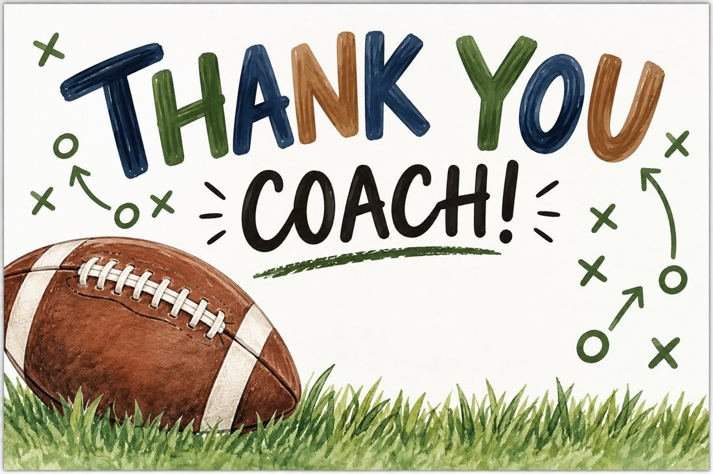

Something for every little moment
Find a little joy...
Pick a category to explore.
Fresh from the printable library
Made for happy little moments
Three lovely little freebies, ready for your printer ♡


All three downloads are free! Print at actual size (100%) on US letter paper; use cardstock for cards and tags.
The maker behind the paper
Hi there! I'm so happy you're here. ♡
I'm a Wisconsin mom of two, a homeschooling mama, animal lover, and someone who always seems to have a new craft or creative project going on!
Between homeschooling, caring for our many animals, and juggling more hobbies than I probably need, life is busy, a little messy, and full of fun. I created Little Paper Joy to share thoughtful, cute, and free printables that make everyday moments feel extra special.
Thanks for visiting my happy little corner of the internet!
A little happy mail
Little downloads. Big smiles. ♡
Have a question or a printable idea? A contact method will be added here soon. In the meantime, enjoy the free downloads!